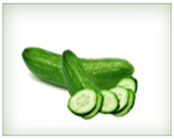
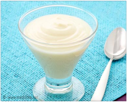
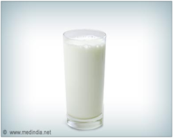

Masks for Clearing Blemishes


1. Grate half a cucumber and blend it with a cup of oatmeal. Add 1 teaspoon of yogurt to this, to make a paste.
Apply on the face, taking special care to cover blemishes and leave for 10 minutes.
Wash gently with cool water.
With regular use this mask will soften and smooth acne pits.
2. This is a simple one – grate cucumber and strain to collect ½ a cup of juice.
Add 1 tablespoon sugar and mix well.
Apply this on face and neck area, leave for 15 minutes.
Wash gently with cool water and splash some cold water to close pores.
The skin will clear up and glow.
3. Take 1 teaspoon of brewer’s yeast and mix it well with 1 tablespoon of yogurt.
Apply this paste and leave it on for 20 minutes.
Wash gently with cool water.
This helps to clear blemishes.
Repeat every other day for 2 months.

4. Mash some boiled carrots to make a cup.
Apply thickly on face and leave it on till it dries or for 20 minutes.
Rinse with cold milk first and then use cold water.
This is very good for acne marks and pits.


5. Use a blend of 1 teaspoon lemon juice, 1 teaspoon of honey and 1 teaspoon of rose water.
Apply on face and neck every night and go to bed.
Wash with normal water in the morning.
If this feels sticky– wash it after 40 minutes.
6. Peel and grate some green papaya.
Mash well or run it through the blender.
Apply this as a thick paste for 20 minutes before washing face.
This works well on acne and pit marks and brings a smooth and glowing complexion.
7. Castor oil is very popular and known to remove blemishes and pigmentation.
Apply by moving fingers in a circular direction.
Use this twice a day.
Avoid using if there are any pus filled pimples – as the oil will aggravate them.
Avoid using castor oil during pregnancy.
Face masks – which are made from natural ingredients, will take a little longer to show results, though regular care will definitely show positive and long lasting results.